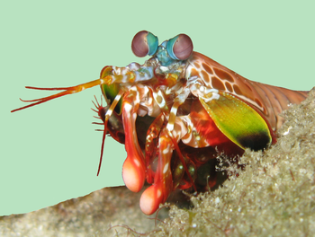

Fatos sobre o Stomatopoda

Mantis shrimps, or stomatopods, are carnivorous marine crustaceans of the order Stomatopoda, branching from other members of the class Malacostraca around 340 million years ago. Mantis shrimps typically grow to around 10 cm (3.9 in) in length, while a few can reach up to 38 cm (15 in). The largest mantis shrimp ever caught had a length of 46 cm (18 in); it was caught in the Indian River near Fort Pierce, Florida, in the United States. A mantis shrimp's carapace (the bony, thick shell that covers crustaceans and some other species) covers only the rear part of the head and the first four segments of the thorax. Varieties range in color from shades of brown to vivid colors, with more than 450 species of mantis shrimps being known. They are among the most important predators in many shallow, tropical and subtropical marine habitats. However, despite being common, they are poorly understood, as many species spend most of their lives tucked away in burrows and holes. Called "sea locusts" by ancient Assyrians, "prawn killers" in Australia, and now sometimes referred to as "thumb splitters" — because of the animal's ability to inflict painful wounds if handled incautiously — mantis shrimps have powerful raptorials that are used to attack and kill prey either by spearing, stunning, or dismembering. Some mantis shrimp species have specialised calcified "clubs" that can strike with great power, while others have sharp forelimbs used to seize the prey (hence the term "mantis" in its common name).
Thermonuclear Bomb of light and beauty

Our eyes contain millions of light sensitive cells called rods and cones. Cones enables us to see color. Dogs have two types of color-receptive cones: green & blue. Humans have three types of color-receptive cones: red, green & blue. The mantis shrimp have SIXTEEN color-receptives cones
Aquaria
Some saltwater aquarists keep stomatopods in captivity. The peacock mantis is especially colourful and desired in the trade. While some aquarists value mantis shrimps, others consider them harmful pests, because: They are voracious predators, eating other desirable inhabitants of the tank. Some rock-burrowing species can do more damage to live rock than the fishkeeper would prefer. The live rock with mantis shrimp burrows are actually considered useful by some in the marine aquarium trade and are often collected. A piece of live rock not uncommonly conveys a live mantis shrimp into an aquarium. Once inside the tank, it may feed on fish and other inhabitants, and is notoriously difficult to catch when established in a well-stocked tank. While there are accounts of this shrimp breaking glass tanks, they are rare and are usually the result of the shrimp being kept in too small of a tank. While stomatopods do not eat coral, smashers can damage it if they try to make a home within it.
Taxonomy
| Reign: | Phylum: | Subphile: | Class: | Subclass: | Order: |
|---|---|---|---|---|---|
| Animalia | Arthropoda | Crustacea | Malacostraca | Hoplocarida | Stomatopoda |
References
https://en.wikipedia.org/wiki/Mantis_shrimphttps://theoatmeal.com/comics/mantis_shrimp